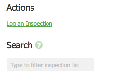
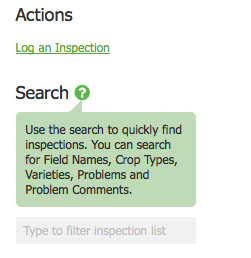
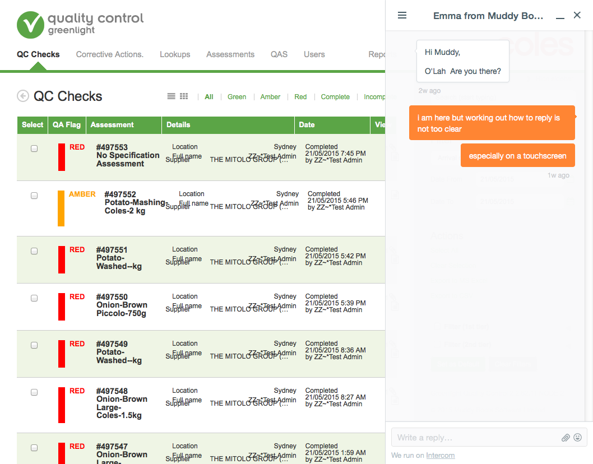

There is help text that appears throughout the greenlight applications.
This is identified by a question mark in a circle.

When the icon is selected it reveals text which helps to guide a user to complete the element. In this case what to add to the Search input form.

We have recently installed Intercom into the Greenlight Applications. This appears as an orange conversation icon in the bottom right of the screen.
When selected a chat window expands to the right side of the screen as shown below.

See the Pen Help by Greenlight Style Guide (@greenlightstyleguide) on CodePen.